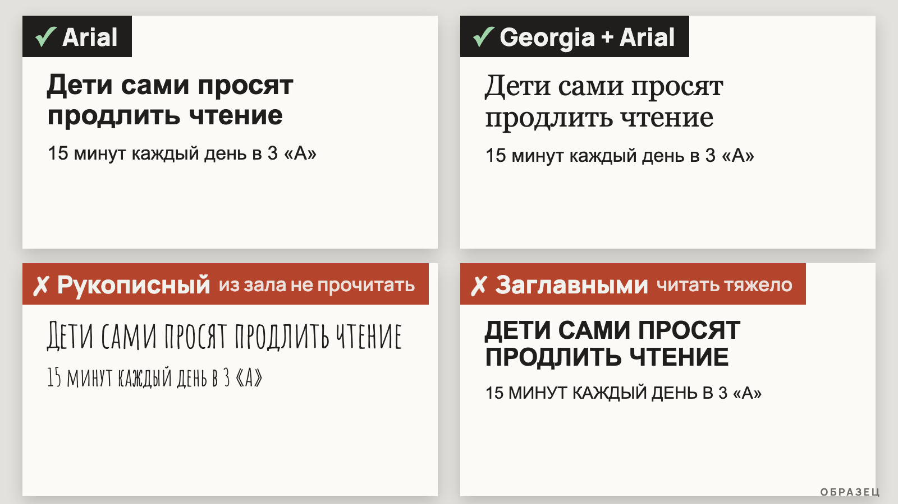
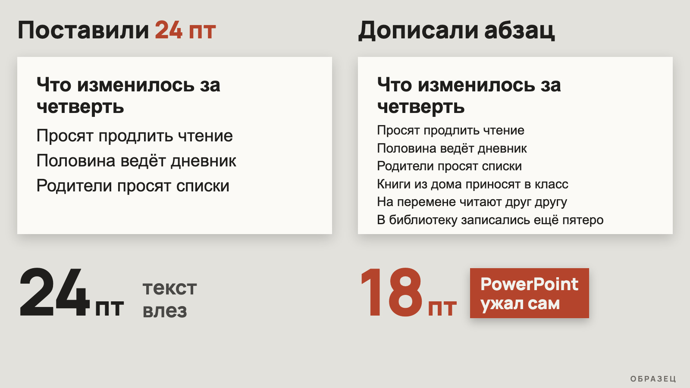
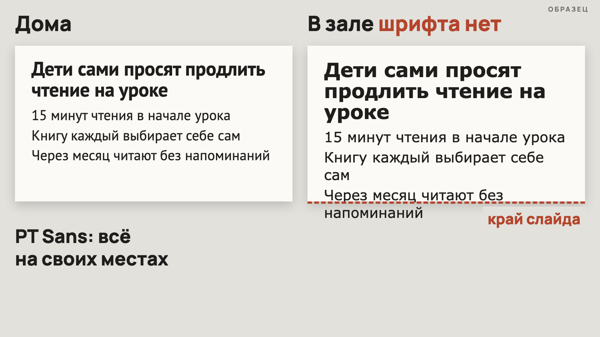
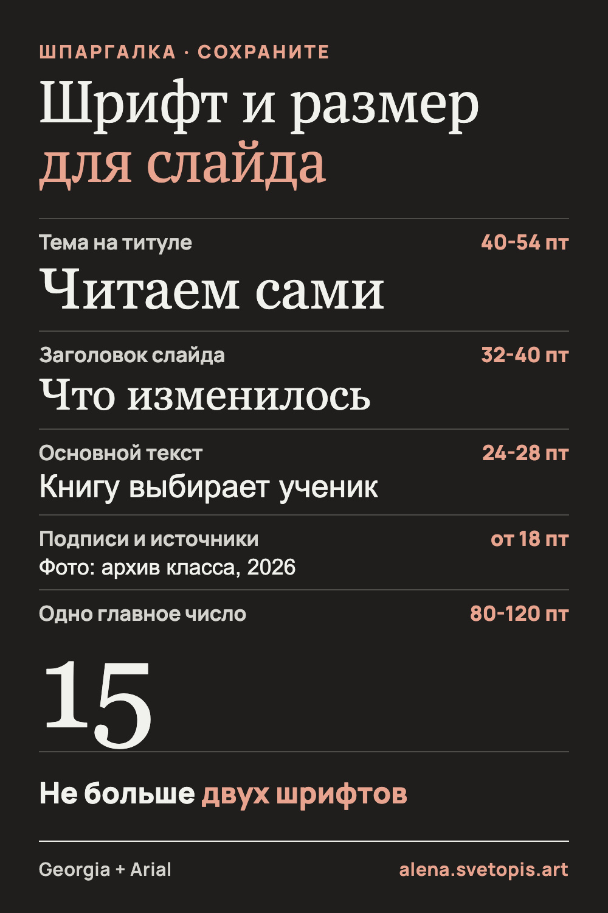

Разбор · шрифт и размер
Шрифт для презентации: какой выбрать и какого размера
Какой шрифт для презентации взять и какой размер шрифта поставить заголовку, тексту и подписям, чтобы прочитали из зала.
Ответ за 10 секунд
| Что на слайде | Шрифт | Размер |
|---|---|---|
| Тема на титуле | Georgia или Arial жирный | 40-54пт |
| Заголовок слайда | Georgia или Arial жирный | 32-40пт |
| Основной текст | Arial или Calibri | 24-28пт |
| Подписи и источники | как основной текст | от 18пт |
| Одно главное число | как заголовок | 80-120пт |
Шрифтов не больше двух на всю презентацию. Методичка требует другое? Сначала она.
Сохранить шпаргалку
Алёна Прасолова, фотограф, собираю презентации к выступлениям
27 ноября 2026
Я собираю презентации педагогам и психологам. Ниже не самые красивые шрифты из подборок, а те, что не подведут на чужом компьютере.
Какой шрифт выбрать для презентации, чтобы он был на любом компьютере
Для текста Arial или Calibri, для заголовков тот же жирным или Georgia. Они есть везде, где стоит PowerPoint.

Шрифтов не больше двух, а выделять лучше жирным, чем третьим шрифтом. PT Sans и PT Serif тоже хороши, но в зале их может не оказаться. Рукописные и «весёлые» шрифты оставьте для открыток.
Сделайте так:
- Выделите текст и посмотрите название шрифта на вкладке «Главная».
- Незнакомое название? Замените разом во всей презентации: «Главная», стрелка у кнопки «Заменить», «Заменить шрифты».
- Пару задайте сразу для всех слайдов: «Вид», «Образец слайдов», кнопка «Шрифты», потом «Закрыть режим образца».
Какой размер шрифта в презентации и почему PowerPoint его уменьшает
Текст 24-28 пт, заголовок 32-40 пт, подписи от 18. Не влез текст, и PowerPoint сам уменьшает шрифт: проверьте после набора.

Так PowerPoint делает в готовых рамках слайда. В левом нижнем углу рамки появляется кнопка «Параметры автоподбора», в её меню текст можно разделить на два слайда: это лучше, чем мелкий шрифт.
Сделайте так:
- Набрали текст и у рамки появилась кнопка «Параметры автоподбора»? Значит, шрифт уже мельче, чем вы ставили.
- Сократите текст или разделите его на два слайда через эту кнопку.
Почему шрифт в презентации поменялся на чужом компьютере
В зале нет вашего шрифта, и PowerPoint подставил другой: строки едут. Возьмите копию в PDF или внедрите шрифты в файл.

Чаще всего теряются шрифты, скачанные из интернета. И Aptos: новый PowerPoint ставит его сам, а в PowerPoint 2016 или на компьютере без интернета его может не быть.
Сделайте так:
- Сохраните рядом копию в PDF: в ней шрифт не поменяется.
- Будете править на месте? В PowerPoint для Windows: «Файл», «Параметры», «Сохранение», флажок «Внедрить шрифты в файл» и под ним вариант со всеми знаками.
Шпаргалка: шрифт и размер на одной картинке
Таблица картинкой для телефона и все 10 правил оформления на листе A4. Бесплатно и без почты.



Картинка 1000×1500, 255 КБ. Нажмите на неё, чтобы увеличить.
PDF, 175 КБ, лист A4.
PDF открывается в этой же вкладке, вернуться к статье: кнопка «Назад». Если файл скачался, он в загрузках. Ничего не произошло? Откройте эту страницу в обычном браузере: меню с тремя точками, пункт «Открыть в браузере».
Сделаю к вашему выступлению
От 1 500 ₽, черновик до оплаты, за 1-2 дня, редактируемый файл PowerPoint.
В MAX и в Telegram отвечает бот-приёмщик. Слайды собираю и проверяю я сама.